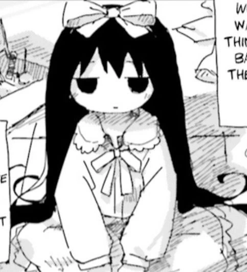
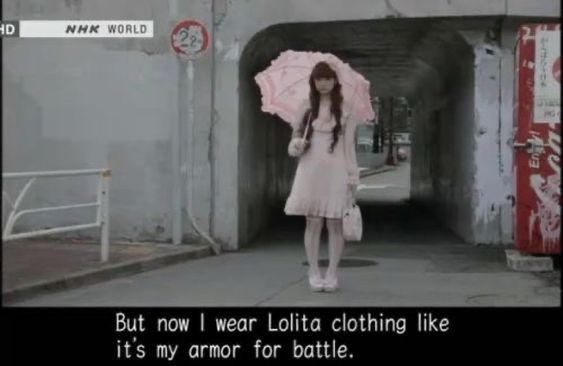
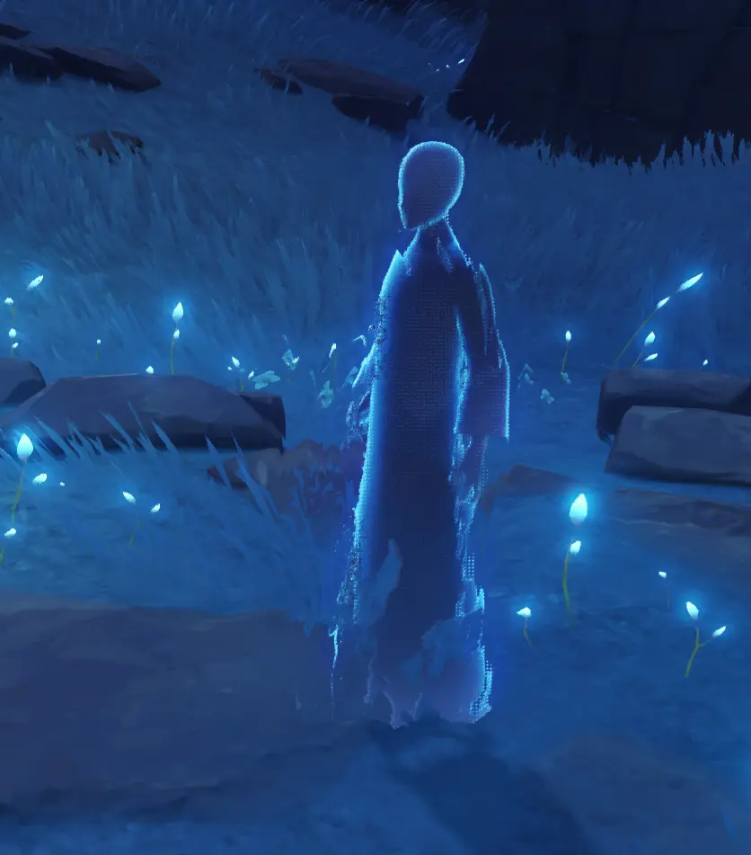
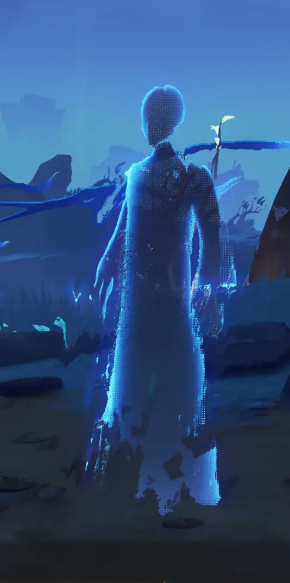
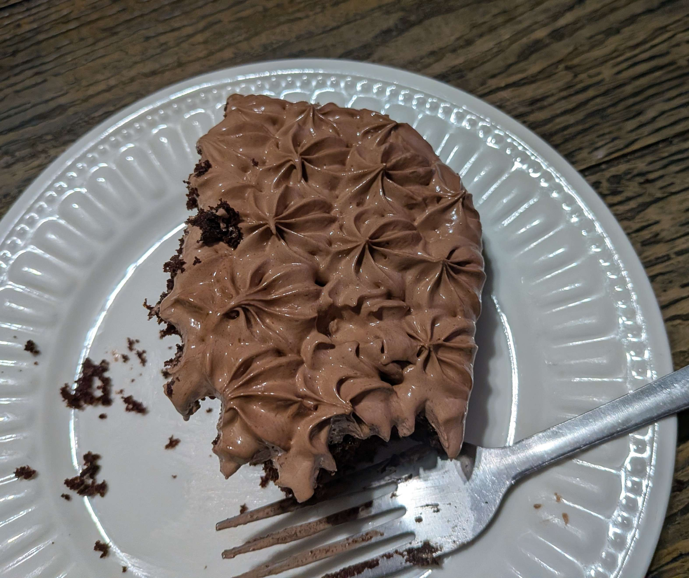

Futile attempts at salvation
September 3, 2026"I went to the air hoping to meet anyone, I didn't encounter even a single familiar person. Not even anyone I dislike or don't care about. Not even family members, other than direct ones I went with. I seemingly have been transported into a universe where anyone in my real life I have any connection to doesn't exist. They still have a presence online to keep up the illusion but they aren't really the people I knew, only pixels" - 30/08/26
I got a new laptop. It is because the one I've had for five years is breaking down. The battery is deffinitely dying, it died instantly one time when I uplugged it at at 100%. It crashes so much when I move and looks all glitchy (I have been told just now that it could be loose RAM, I will try that when I am home tonight.)
I wanted to write about it. I remembered when things will say they got new tech and "expect better quality content." Can't really say that because my quality has always be the best I can, didn't need better tech for that! The only thing better will be for me when working on my site because I will no longer lose progress so much. Actually I just had the thought that quality for you could be better specifically when I write like this and suddenly my laptop crashes and all my writing is gone and I have to rewrite it from memory, it wasn't as good at the original text.
babyzai
Fashion
August 18, 2026I never cared before about dressing up or my looks. I just wore what's comfortable which was tights, t-shirt and hoodie. One day I suddenly decided I want to try wearing jeans, said jeans because I wanted something that wasn't like tights anymore but wasn't sure specifically. (I refused to wear jeans because of the texture since when I was first able to make my own decisions though.) When shopping for new pants, I found kakis which aren't tight on my skin and are comfortable. Happened at about 15-16 years old.
At some point in later years, I started hating how I look when I see myself in the mirror. I had to actively avoid looking at it or else my mood would be completely ruined. My hair was regular "straight" long hair. I had no bangs, I started not liking my forehead being visible. I don't like how it looks. Because of the internet and anime, seeing people and characters with shorter hair and bangs made me want to try it out. The first time I went to the hairdresser wanting to try that haircut, mom scared me out of it by saying how I got bangs when I was little and cried. I don't even remember that. The second time I went, mom said it again. This time I said "Well I don't even remember that so I don't care." I think I would call that haircut life-changing. I used to look in the mirror and want to die, now I look in the mirror and think I'm cute. My hair is above shoulder length with bangs now, and because of less weight, my hair is wavy and the front naturally turned into swirls.
Along with playing Needy Girl Overdose first the first time, I simultaniously became interested in j-fashion. This is because my Twitter timeline started showing me a bunch of posts about Jirai Kei. I felt more interested in Tenshi Kaiwai when I found out about it on Reddit. The mention of Needy Girl Overdose is important because that's where thinking of myself as an angel came from. Ame is considered to be Jirai Kei, and so I wanted a bit to dress up and be cute like her. Her outfit with the skeleton shirt is already close to the style I already dress in (Emo or alt, more alt.) I'm also intrested in lolita.
Now a few days ago, I woke up from a dream where I wore a light purple colored long sleeve nightgown, frilly at the bottom of the robe/skirt(?), end of the sleeve, and the collar parts. It was comfortable nightwear that looked like a pretty dress. Now I want to try on something like that. I'm thinking maybe going to a thrift store someday and looking for any. Thrift stores can have good things for cheap, it's a good start.
I thought about it before. I never cared about how I looked or just despised how I looked until I cut my hair shorter with bangs and suddenly I'm interested in fashions and want to dress up to look cool or cute.


Petscop video rant and Nobody cares about how I feel
Written June 27, 2026 | Edited June 28, 2026 & August 18, 2026This morning, I found the video about Petscop by Pheyden and it helped me understand important things that no other video even cared about, like what is the tool. It also helped me finally have my own interpretation of the story. Because of that I wanted to rewatch videos about Petscop. I found Sagan Hawkes' video and watched it since it's a bit over an hour long and I had an hour of free time left.
In the beginning of the video, he says that the creator left things not so explicit on purpose. But then it reached the questions part of the video. He started explaining that he thinks Care and Paul are the same person, which I think so too. But then he mentions the interpretation of Paul is trans. He says that it's valid but it's not explicit from the author so it can't be it. He says the same bringing up the interpretation that Paul was never a girl but was forced to be because Marvin's old friend was a girl, basically. He says that he "doesn't even want to entertain it", breifly mentions that that type of thing has transphobic history so the interpretation, and again says it wasn't explicit from the creator so the interpretation is wrong and very bad. I personally don't see what's so untouchable about an interpretation with transphobic history when the evil man in the story already tortures kids as it is. It's entirely possible for that to be what is happening. Marvin tries to forces any of the kids into being his old friend which they are not, trans people in the interpretations Hawkes called so terrible also experience being forced to be something they're not. Basically if I made no sense again, Hawkes brings up interpretations that very much make sense and could be possible only to sound harsh when saying those are wrong and I have issue with that. Instead his interpretation is that it's supernatural and he too enthusiastically says he is 100% sure there's a sentient entity in the game. I would have no problem with it if he didn't already call other interpretations wrong for being not explicit by the author and thinking of it like "the one who must not be named" type thing. I don't remember the rest of his interpretation after that because I stopped watching. I find it obsurd that he calls some interpretations wrong because it's not made explicit by the author after saying the author didn't make things explicit on purpose.
After watching Wendigoon's video, I had more thoughts. With how Wendigoon eplains very sure way, I realized that Sagan's whole video was like "there's this i don't know." He misses a lot of important stuff too. I wonder why he made this video if he had so much trouble understanding that "I don't know" and "I think" really are in many sentences in what is supposed to be an "in depth look" at Petscop. It feels more like just trying to understand it basically, in the way you try to understand a piece of media when seeing through it for the first time and not much more than that.
Today I woke up at 5:55 PM. I wanted to ask either of my parents to go to the store for energy drinks but I saw they weren't home. I worried about calling since what if they are only minutes away from home already and they would get upset at me for calling when they were just done with whatever. When I actually looked at my phone, I saw I got a text from dad asking if I'm awake but it was thirty minutes before. I thought "Oh they want me to call?" so I do. Immediately I felt bombarbed "Oh man sorry we just left [city] oh sorry" but it felt or was way more than that. I was stuck not able to even speak for like 15 seconds because it was so loud too. It was because they wanted to ask if I wanted something from my favorite restaurant which is there. When I could finally talk I just asked for my energy drinks we get at any gas station or store. Then they asked if I want McDonald instead and I said yeah. That's a bonus.
So here's the bad part. They get home with my McDonald and they drop the drink. No problem, I would want the rest anyway. But they didn't consider it and just let my brother drink from MY drink. When I went to pick up my stuff and then came downstairs a second time, mom asked if I was want my drink still and I said yes pretty loud, or it sounded loud to me. Maybe it was loud because mom said don't blame my brother it's not his fault. I don't care. I'm mad at everyone. It feels too often like they don't consider how I feel about things. Then when I'm back in my room to eat, I sent the money for my stuff since it's mine so I technically pay for it but I accidentally sent too much money. I sent the money for my Buldak noodles that I already gave her the money for when she made the Walmart order. Mom noticed and asked if I sent the wrong amount, but if I was the one to notice I wouldn't really care. They've taken so much money from me already, it doesn't matter anymore.
I felt the need to write. This is the most I could think of.
This one feels more sensitive in topic but I'm not mentally well while writing this and it feels like I'm rambling incoherrently so I'm going to go back and fix it later. (Spelling and grammar checked)
We are so back
June 16, 2026I am writing this entry on my new computer! I got it mainly for video games. I have a gaming laptop, that's what I've been using this whole time but it's getting old. It can't really handle AAA games which is what I want to play (Cyberpunk, GTA, and RDR2 specifically.) I did play GTA5 on it before but the fan got so loud that it scared me so I never played that big of games on it again, except for Genshin Impact obviously.
Since my computer arrived today, I set it up and got on Genshin Impact to see how well it runs. It runs amazing even on the high graphics settings. Everything is so pretty too, I took pictures of visual effects that are new to me because I couldn't see them on medium graphics settings. It's so cool I get to see it high quality now. It was already so pretty with just medium graphics and now even more so. There are things I didn't screenshot because it was moving or I couldn't. The omni die in the TCG when you roll are actually colorful and the color moves around (Yes I did play the probably not hard on recources card game in the middle of trying out my powerful computer's capabilities, I just wanted to play it.) Columbina has pretty effects in her sleeping idle animation and the ring behind her after her burst that I couldn't see before. And here's what I took pictures of.


These ghosts/spirits have more effects, like how it's more detailed and dithered. On my laptop, it was not dithered like that and a texture more solid.
Barely visible in this photo because it couldn't capture the movement but the ring behind her back is more glowy.
More subtle effects I didn't see before.
Lumi reflects in the water. I couldn't get a better photo because Lumi kept moving away from on top of the water.
This is the view on top of one of the towers in the Temple of Space. This one is just higher quality image than I could take before. I just wanted to see it because I like this view.
The floor is reflective.
The purple item is radient.
Focus on the peach colored parts of her clothes, specefically her cuff to the left which is the most visible of what I tried to picture. It looks better when it's moving but I was fascinated by the lighting.
The water has more visible ripples like real water.
I'm still going to use my laptop just as much as before of course. It still runs completely fine, just has been crashing weird a lot when it gets moved in certain ways. It's a laptop so of course it won't be used for the biggest games, it's compact so the powerful components get hot fast. When my little brother found out I was going to get a new computer, he asked me for my old one. I said no I'm still going to use it. I'm going to use the two computers for two different purposes, one mainly for gaming and one for everything else. I don't remember the conversation anymore but it felt like using two computers for two different purposes is a non-existent concept to him which was funny.
Birthday
June 7, 2026I was going to go to my favorite restaurant today, then I was going to go to the store and I would've bought ramune and stuff, and I would've written about it for this entry. I thought I set my alarm, I'm 100% sure I did because I remember it. I guess I did that thing where I turn my alarm off while still asleep so I didn't wake up from it. It was too late so we're going next weekend instead.

Anyway my cake. It's storebought McCain chocolate cake because it's my favorite. I forgot to take a picture before I started eating.
The unfortunate thing of having my birthday if I really don't want to be getting older is that I need to update my age on things or else I'd be lying. Fortunately, I just don't care anymore.
Untitled #1
June 1, 2026I shouldn't speak on anything until my mind can leech from others. My own interpretation always ends up being wrong. I always speak, feeling I understand confidently, only to see what others say and I got it all wrong. In school, I did always just trail behind whoever I was comfortable with, and if I couldn't, I hid in the bathroom.
It was painful how quickly she went for that person none of us liked very much. I thought we could team up one last time out of obligation but no, not even that.
I did pet the support dog when it had it's vest on, but everyone else was doing it so it made me think it would be okay. I was told not to do that by one of them. It felt condescending. I understand the dog was working, I'm sorry.
A funny misspelling of my name turned into being occasionaly talked to as if I was a Christ-like figure. The group chat was named "Church of ▋▋▋▋▋▋". They once spoke about writing a bible around it. There was nothing to write about, yet I still imagined how that would be. I already felt isolated, then I wasn't even an equal anymore. The only coping mechanism I could find to not just cry all the time was to delude myself that I'm a god. With the help of that, I didn't feel so below everyone, though I am not as human either.
Backrooms
May 31, 2026Backrooms movie, spoiler alert!
Before the day even started, it wasn't good. I was barely able to sleep because I was in pain. When arriving at the theater, all the store signs were drippy like everything is old and decrepit. It's because of all the rain but everything around looked dry so I was like what the hell. When I tried to go put butter on my popcorn, I hit it on the counter by accident and spilled some. When I bought a ticket, on my own for the first time so I panicked. Then even though the seats were a bit over half taken, there was still a set of good seats right in the middle which is my favorite spot. While the ads were playing and I was waiting for the movie to start, I was listening to my own music. Once In A Lifetime by Talking Heads played which felt connected when I heard Mary ask Clark "How did you get here?" while showing him driving a (not large) automobile.
After Mari woke up tied to the chair in the kitchen, Clark explained to her that the Backrooms is a space that tries to recreate the memories of the people that enter it. He then wanted to redo that therapy excercise. He asked the woman still-life to turn the light off but she didn't listen to him. He laughs and says he's been trying that with her for a while now and goes to do it himself. I noticed her head lowers in the moment he passes in front of her. In this whole sequence, we see again how he's verbally abuses to Barbara who used to be his wife before she kicked him out of his house. It's the moment when he went to turn off the light that I realized something about the whole movie and honestly cried a bit. It's childhood trauma. Just before, there was a sequence going down and down from the indoour of Mari's house from when she was a kid and kept inside by her mother who I believe must've suffered from dementia, schizophrenia, or some other mental illness that causes delusion. As it went lower and lower, the room became more and more empty and unstructured. It's like as you forget more and more. So that and the childhood trauma, the sort of warped still-lifes, it's all distorted memomries of childhood trauma. I'm terrible at explaining, I know. But Clark reminded me of my dad in that moment.

It's my memory of my childhood bedroom, specifically of it when I was young, since I still live in here. I remember it as much bigger, a bed with red metal frame at the end. There was a tall (for the height I was) little white shelf with a door type. I had this Whinnie the Pooh rug but I only remember it because I found it again a while ago. I am sure my room was very empty but my memory of it is more empty than I think it was.
Abuse?
May 22, 2026My memory is failing when it comes to recalling most of what my dad says to me in those bad moments, the ones I always recall when thinking too much about the bad things he's done to me. Is this a good thing. I don't really think so.
It bothers me that I can't remember things. Although, I still remember those things happened but I don't remember the specific words anymore really. I don't want to forget everything completely, I've learned how to avoid conflict so I'd rather not forget it all and cause problems for myself.
Harbourer of a sad existence
May 10, 2026There is a girl, off to die she goes! Why? Who cares!
The scientist studies, grief is what he feels. He kills himself and studies again tomorrow.
Their was an artist, she paints. The people found the blood of her pet rat on the canvas, the canvas with a painting of a man no one knows. She grieved and went to be hanged.
There was a writer, he knew not of the fire outside his house. He only enjoyed his problems in fracturing peace. He died as well.